Chapter 8 직관으로 이해하는 회귀분석
- 산업인력개발에서의 회귀분석
- 변수간의 관계를 구명하는 연구가설들
- 연구가설을 검정하기위해 필요한 데이터의 구조
- 회귀분석과 1차함수
- 절편의 의미
- 기울기의 의미
- Y hat과 Y
- 변수가 여러개일때 계수의 해석(다중회귀분석과 통제변수)
- 회귀분석과 2차함수
- 연구문제(임금방정식)
- 절편의 의미
- 기울기의 의미
- 회귀식으로 이해하는 조절효과
- 조절효과의 개념
- 회귀식 만들기와 해석하기
- 분석결과 해석하기
- 회귀식으로 이해하는 매개효과
- 매개효과의 개념
- 회귀식 만들기와 해석하기
- 분석결과 해석하기
8.1 산업인력개발에서의 회귀분석
산업인력개발분야에서 이루어지는 상당수의 연구들은 회귀분석을 기초로 하고 있다. 회귀분석은 중급이상의 연구방법의 밑바탕이 되며, 최근 연구들에서 많이 쓰이고 있는 조절효과, 매개효과분석, 구조방정식분석, 다층모형 분석 등의 기초이다. 회귀분석에서 가장 중요한 것은 회귀식을 이해하는 것인데, 상술한 연구방법들이 모두 간단한 회귀식의 조합으로 풀어나갈 수 있기 때문이다. 이 책의 9장은 다른 장과 다르게 좀더 직관적으로 회귀분석을 설명하려고 한다.
8.2 회귀분석과 1차 함수
8.2.1 절편과 기울기의 의미
예를 들어 근로자의 ’학습시간’과 ’직무성과’가 관계가 있다고 가정해보자. 근로자 10명으로부터 작년 1년간의 학습시간과 그 해의 직무성과 자료를 다음의 표와 같이 수집하였다.
| ID | X(학습시간) | Y(직무성과) |
|---|---|---|
| 1 | 1 | 12 |
| 2 | 0.5 | 11 |
| 3 | 2 | 18 |
| 4 | 3 | 19 |
| 5 | 3 | 21 |
| 6 | 3.5 | 18.5 |
| 7 | 4 | 21.5 |
| 8 | 4 | 23.5 |
| 9 | 4.5 | 22.5 |
| 10 | 5 | 25 |
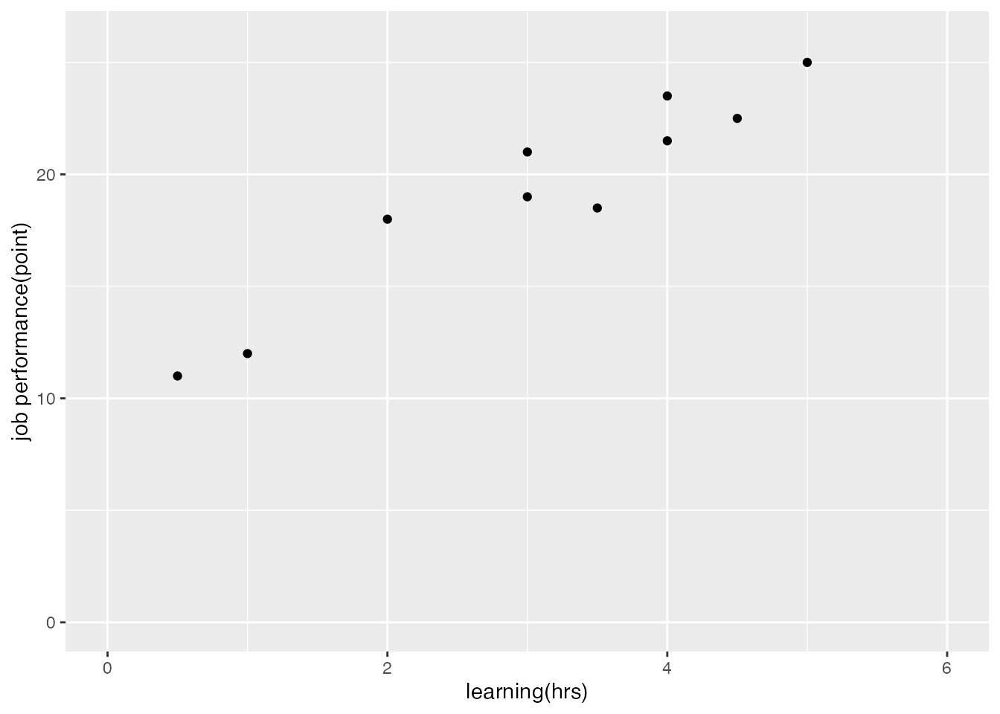
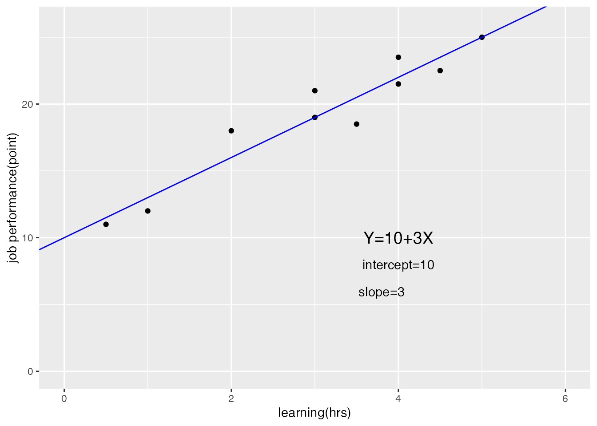
이 10개의 자료를 X축을 학습시간, Y는 직무성과점수로 두고 산점도를 그려보자. 10개의 점이 찍혀 있는 그래프를 보면 학습시간이 많은 사람일수록 직무성과 점수가 대체로 높다는 것을 알 수 있다. 오른쪽 그래프에는 10개의 점을 가장 잘 설명하는 직선을 하나 그려보았다. 이 직선은 1차 함수(\(Y=10+3X\))로 간단히 표현할 수 있다.
1차 함수는 \(X\)가 \(Y\)에 대응되는 규칙이다. \(X\)에 특정값을 투입하면 함수라는 규칙에 따라 특정한 \(Y\)가 산출된다. 중학교 수학시간에 배웠던 간단한 1차 함수의 특징을 생각해보자
- 절편(intercept) :\(X\)가 0일때 \(Y\)의 값
- 기울기(slope) :\(X\)가 한 단위 변화할때 \(Y\)가 변화하는 양이다.
이 함수에서 절편은 10이다. 그래프에서도 \(X\)가 0일때 \(Y\)값은 10인것을 확인할 수 있다. 이 절편은 회귀분석시에도 자주 해석이 되므로 기억할 필요가 있다. 이 데이터에서는 \(X\)(학습시간)이 0인 사람의 예측되는 \(Y\)(직무성과점수)가 10점이라고 해석할 수 있다. 기울기는 \(X\)로 미분한 값으로도 해석할수 있는데, 1차 함수이기 때문에 기울기는 “3”인 상수이다. 다시 말하면 어떠한 \(X\)값이든 한 단위 변화할때 \(Y\)의 변화량이 동일하다는 것이다. 파란선의 기울기가 어떠한 구간에서도 동일한 직선임을 확인하자. 이러한 1차 함수의 특징을 고려하여 \(X\)와 \(Y\)가 선형적인 관계(Linear relationship)라고 부른다.
8.2.2 기울기의 의미
여기서 기울기는 보통 “회귀계수(regression coefficient)”라고 불린다. 독립변수(X)와 종속변수(Y)의 관계를 나타내는 계수이다. 회귀계수를 해석하는 방식은 1차 함수에서 기울기 값을 이해하면 매우 쉽게 기억할 수 있다.
- 기울기(회귀계수)의 부호
- 양의 값(+)을 가지면 : X와 Y의 관계가 정적(positive)이다. X가 증가할때 Y가 증가한다.
- 음의 값(-)을 가지면 : X와 Y의 관계가 부적(negative)이다. X가 증가할 때 Y가 감소한다.
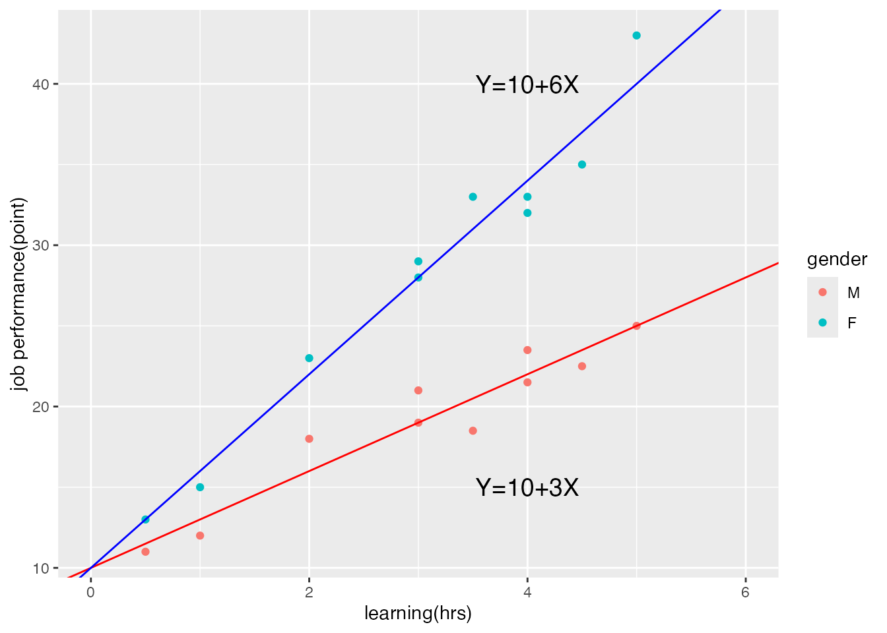
8.2.3 \(\hat{Y}\), \(Y\)와 잔차(residual)
’학습시간(\(X\))과 ’직무성과(\(Y\))’의 그래프를 다시 살펴보자. \(Y=10+3X\)라는 1차함수는 \(X\)를 투입했을 때 산출되는 \(Y\)의 값이다. 우리가 갖고 있는 10개의 데이터는 이 함수에 의해 대체로 잘 예측되고 있지만, 그렇지 않은 데이터도 있다.
- ID=1인 사람의 학습시간(\(X\))은 1이고, 직무성과(\(Y\))는 12이다. 함수에 의해 예측되는 \(Y\)값은 \(10+(3*1)=13\) 으로 “1만큼의 격차가 있다. 이때 함수에 의해 예측되는”13”을 우리는 \(\hat{Y}\)라고 부른다.
- 이와 동일하게 나머지 데이터에서도 \(\hat{Y}\)를 다음의 표와 같이 계산할 수 있다.
- 실제 관측된 \(Y\)와 계산된 \(\hat{Y}\)의 차이(difference)도 옆에 계산해보자. \(Y-\hat{Y}\)= 잔차(residual)로 정의한다.
| ID | \(X\)(학습시간) | \(Y\)(직무성과) | 예측된 \(Y\)(\(\hat{Y}\)) | \(Y\)-\(\hat{Y}\) |
|---|---|---|---|---|
| 1 | 1 | 12 | 13 | -1.0 |
| 2 | 0.5 | 11 | 11.5 | -0.5 |
| 3 | 2 | 18 | 16 | 2 |
| 4 | 3 | 19 | 19 | 0.0 |
| 5 | 3 | 21 | 19 | 2.0 |
| 6 | 3.5 | 18.5 | 20.5 | -2.0 |
| 7 | 4 | 21.5 | 22 | -0.5 |
| 8 | 4 | 23.5 | 22 | 1.5 |
| 9 | 4.5 | 22.5 | 23.5 | -1.0 |
| 10 | 5 | 25 | 25 | 0.0 |
여기에 아랫첨자(\(i\))를 넣어서 종합해보면 다음과 같다.
- \(X_i\) : \(i\)번째 사람의 관측된 \(X\)값이다. 예: \(X_3\)\(=2\)
- \(Y_i\) : \(i\)번째 사람의 관측된(observed) \(Y\)값이다. 예: \(Y_3\)\(=18\) 이때 “관측되었다”는 뜻은 우리가 관찰한, 또는 측정한 값이라는 뜻이다. (가상의 값이 아님)
- \(\hat{Y}_i\) : \(i\)번째 사람의 예측된(predicted) \(Y\)값이다. 예: \(\hat{Y}_3\)\(=16\). 예측된 값 16은 \(\hat{Y}=10+3X\)라는 추정된 회귀식에 \(X_3=2\)의 값을 넣어서 생성된 값이다(10+(3*2)=16)
- \(residual_i\) = \(Y_i-\hat{Y}_i\). : \(i\)번째 사람의 관측값과 예측된 값의 차이이다. 예: \(residual_3\)\(=2\)
회귀식은 우리의 관측치를 완벽히 설명할수가 없기 때문에, 잔차는 필연적으로 발생한다. 예를 들어 ID 4번과 5번은 \(X\)의 값이 3으로 같다. 10개의 데이터를 통해 추정된 회귀식 \(\hat{Y}=10+3X\)에 \(X=3\)을 투입하면 \(\hat{Y}\)는 19이다. ID 4번의 사람은 \(Y\)가 19로 \(\hat{Y}\) 19와 같아잔차가 0인데 반해, ID 5번의 사람은 \(Y_4=21\)로 잔차가 2만큼 발생한다.
잔차는 작을수록 좋다. 우리가 추정한 회귀식이 관측된 값들을 잘 예측한다는 뜻이기 때문이다. 따라서 회귀분석을 할때 추정되는 회귀계수(절편과 회귀)는 잔차를 최소화하는 방식으로 계산된다. 이와 관련한 자세한 내용은 Chapter 9에서 다루도록 하겠다.
위의 데이터를 활용해서 실제로 회귀분석을 실시해보자. Chapter 9에서 다루겠지만 R에서 회귀분석은 매우 간단한 코드로 이루어져있다. 여기서 산출되는 값을 활용해 다시 한번 회귀식을 제대로 이해해보자.
ID<-c(1,2,3,4,5,6,7,8,9,10)
X<-c(1, 0.5, 2, 3, 3, 3.5, 4, 4, 4.5, 5)
Y<-c(12, 11, 18, 19, 21, 18.5, 21.5, 23.5, 22.5, 25)
Learning <-data.frame(ID, X, Y)
learningReg <-lm(Y ~ X, data=Learning)
summary(learningReg)
##
## Call:
## lm(formula = Y ~ X, data = Learning)
##
## Residuals:
## Min 1Q Median 3Q Max
## -2.0437 -0.9187 -0.2937 1.0917 1.9493
##
## Coefficients:
## Estimate Std. Error t value Pr(>|t|)
## (Intercept) 10.0925 1.0930 9.233 1.53e-05 ***
## X 2.9861 0.3255 9.173 1.61e-05 ***
## ---
## Signif. codes: 0 '***' 0.001 '**' 0.01 '*' 0.05 '.' 0.1 ' ' 1
##
## Residual standard error: 1.446 on 8 degrees of freedom
## Multiple R-squared: 0.9132, Adjusted R-squared: 0.9023
## F-statistic: 84.15 on 1 and 8 DF, p-value: 1.611e-05
resid(learningReg)
## 1 2 3 4 5 6
## -1.07858048 -0.58555133 1.93536122 -0.05069708 1.94930292 -2.04372624
## 7 8 9 10
## -0.53675539 1.46324461 -1.02978454 -0.02281369R의 내장함수인 lm을 사용하면 간단히 회귀분석을 실시할 수 있다. 명령어의 사용법은 다음과 같다.
* 회귀분석결과 <- lm(종속변수 ~ 독립변수, data=사용할 data.frame)
또한 회귀분석결과와 잔차를 확인하는 명령어는 다음과 같다.
* summary(회귀분석결과)
* reisid (회귀분석결과)
산출된 회귀분석결과를 살펴보면 크게 두 가지의 coeffocient가 추정되어 있다. 절편(Intercept)과 기울기(X)이다. 절편의 추정지는 10.0925, 기울기의 추정치는 2.9861이다. 추정치 옆에는 3개의 값이 붙는다 표준오차(standard error)와 t-value, 그리고 p-value이다. 이 3개의 값의 의미는 chapter 9에서 다시 다룰테니 일단 넘어가자.
절편과 기울기의 추정치를 활용하여 회귀식을 구성하보면 다음과 같다. (8.1)
\[\begin{equation} \hat{Y} = 10.0925+(2.9861*X) \tag{8.1} \end{equation}\]
(8.1)를 잔차가 포함된 회귀식으로 다시 쓰면 (8.2)과 같다. \[\begin{equation} Y = 10.0925+(2.9861*X) + e \tag{8.2} \end{equation}\]
resid()를 활용해서 호출한 10개의 잔차값을 확인하면 -2.0437부터 1.9493 까지 분포를 보인다. 이 중 첫번째 사람(ID=1)의 데이터를 활용해서 회귀식을 재확인해보자.
- \(X_1=1\), \(residual_1=-1.0785048\)이고,
- \(Y = 10.0925+(2.9861*X) + e\)에 위의 값을 넣어보면,
- 10.0925+(2.9861*1)-1.0785048 =12.0001로 \(Y_1=12\)과 같은 것을 확인할 수 있다.
많은 사람들이 회귀분석결과를 해석할때 다음과 같은 오류를 범한다.
- 절편을 해석하지 않거나,
- 회귀계수의 유의성에만 의미를 부여하거나, (p<0.001 수준에서 유의했다)
- 회귀계수의 부호만 해석한다 (정적인 효과가 있다, 부적인 효과가 있다)
이를 방지하기 위해서는 반드시 회귀식을 만들어서, 좀 더 선명한 해석을 할 필요가 있다. 회귀식을 만들어 절편과 기울기의 의미를 정확히 이해하고 해석한다면 보다 풍부한 설명이 가능하다. 또한 이러한 단순회귀식을 정확히 이해해야만, 조절효과, 매개효과, 구조방정식, 다층모형 등 다양한 고급 다변량 분석을 손쉽게 이해할 수 있다.
8.2.4 독립변수가 두 개 이상일때의 회귀식
지금까지 살펴본 회귀식은 독립변수가 1개인 단순회귀분석이다. 따라서 X와 Y의 관계를 간단한 1차함수로 설명할 수 있다. 산업인력개발 연구장면에서는 대부분 독립변수 X가 2개 이상인 다중회귀분석(multi-variate regression)을 수행한다.
회귀분석의 목적은 종속변수(Y)를 예측하는 것이라는 점을 생각해보면, 종속변수를 설명하는 독립변수는 많은 것이 자연스럽다. 앞서 다뤘던 재직자의 직무성과 점수를 예측하는 첫번째 독립변수(\(X1\), 학습시간)을 생각해보자. 개인의 직무성과에 미치는 영향을 미치는 다른 변수(\(X2\), 근무기간)이 있다고 가정할 수 있다. 이 데이터를 다음과 같이 확보했다고 생각해보자.
| ID | X1(학습시간) | X2(근무기간) | Y(직무성과) |
|---|---|---|---|
| 1 | 1 | 16 | 12 |
| 2 | 0.5 | 20 | 11 |
| 3 | 2 | 28 | 18 |
| 4 | 3 | 29 | 19 |
| 5 | 3 | 32 | 21 |
| 6 | 3.5 | 30 | 18.5 |
| 7 | 4 | 50 | 21.5 |
| 8 | 4 | 41 | 23.5 |
| 9 | 4.5 | 40 | 22.5 |
| 10 | 5 | 60 | 25 |
종속변수 1개와 독립변수 1개의 관계는 2차원으로 표현할 수 있었다. 당연하게도 종속변수 2개와 독립변수 1개의 관계는 3차원으로 표현해야 한다. 아래 그림은 종속변수 \(Y\)를 Z축으로 두고 10개의 데이터를 좌표에 표시한 것이다. 데이터는 3개의 좌표를 갖기 때문에 데이터의 집합은 더이상 선이 아니라 면의 형태를 갖게 된다. 두 번째 그림은 데이터를 가장 잘 설명하는, 다시 말해 잔차를 최소화하는 평평한 면을 표시한 것이다.
## Error in `library()`:
## ! there is no package called 'plot3D'
## Error in `scatter3D()`:
## ! could not find function "scatter3D"
## Error in `scatter3D()`:
## ! could not find function "scatter3D"이처럼 독립변수가 2개 이상이 되면 더이상 1차 함수로 설명하기 곤란해진다. 독립변수가 2개이면 3차원으로 표시가 가능하하지만, 독립변수가 3개라면 4차원, 4개라면 5차원 등 시각화가 어려워지기 때문에 더욱 어렵다. 따라서 다중회귀분석부터는 회귀식으로 이해하는 것이 편리하다. 위의 그래프에서 활용한 두 개의 독립변수(\(X1\), \(X2\))를 \(Y\)에 대해 회귀분석을 해보자. 아래 결과표를 활용해서 회귀식을 구성해보면 아래와 같다.
##
## Call:
## lm(formula = Y ~ X1 + X2, data = multiLearning)
##
## Residuals:
## Min 1Q Median 3Q Max
## -1.6684 -0.8821 -0.6049 1.1867 2.0497
##
## Coefficients:
## Estimate Std. Error t value Pr(>|t|)
## (Intercept) 9.63316 1.41213 6.822 0.000248 ***
## X1 2.61870 0.74485 3.516 0.009784 **
## X2 0.04566 0.08233 0.555 0.596458
## ---
## Signif. codes: 0 '***' 0.001 '**' 0.01 '*' 0.05 '.' 0.1 ' ' 1
##
## Residual standard error: 1.513 on 7 degrees of freedom
## Multiple R-squared: 0.9168, Adjusted R-squared: 0.8931
## F-statistic: 38.59 on 2 and 7 DF, p-value: 0.0001659
## 1 2 3 4 5 6 7
## -0.9824018 -0.8556850 1.8509879 0.1866247 2.0496482 -1.6683863 -0.8909152
## 8 9 10
## 1.5200143 -0.7436790 -0.4662078\[\small Y=9.63316+2.61870*(X1)+0.04566(X2)+e\]
우리는 총 3개의 추정치(절편, X1의 기울기, X2의 기울기)를 갖는다.
절편 :\(X1\)과 \(X2\)가 모두 0일때, \(Y\)의 값 \(\small 9.63316=9.63316+2.618720*0 + 0.04566*0\)
X1의 기울기(회귀계수) : 회귀식을 \(X1\)으로 편미분한 값. 해석은 다음과 같이 다양함 ** X2를 상수(constant)로 두었을 때, \(X1\) 한단위 변화할때 \(Y\)의 변화량 ** X2를 고정했을 때, \(X1\) 한단위 변화할때 \(Y\)의 변화량 ** X2를 통제했을 때, \(X1\) 한단위 변화할때 \(Y\)의 변화량 ** X2가 random하게 assigned되었을때, \(X1\) 한단위 변화할때 \(Y\)의 변화량
X2의 기울기(회귀계수) : 회귀식을 \(X2\)으로 편미분한 값. ** X1를 상수(constant)로 두었을 때, \(X2\) 한단위 변화할때 \(Y\)의 변화량 ** X1를 고정했을 때, \(X2\) 한단위 변화할때 \(Y\)의 변화량 ** X1를 통제했을 때, \(X2\) 한단위 변화할때 \(Y\)의 변화량 ** X1이 random하게 assigned되었을때, \(X2\) 한단위 변화할때 \(Y\)의 변화량
이제 회귀식이 눈에 익을것이라고 생각한다. 이상의 내용을 종합해서 기본적인 선형 회귀식은 (8.3)과 같이 쓸 수 있다.
\[\begin{equation} Y = \beta_{0}+\beta_{1}*X_{1}+\beta_{2}*X_{2}+\cdots+\beta_{i}*X_{i}+ e \tag{8.3} \end{equation}\]
8.2.5 added variable plot
많은 사람들이다중회귀분석을 해석할때 통제 변수에 대한 해석을 어려워한다. 좀더 간편한 이해를 위해 예를 들어 설명해보려고 한다.
만일 독립변수가 두 개인 경우라면, (8.4)와 같이 쓸 수 있다. \[\begin{equation} Y = \beta_{0}+\beta_{1}*X_{1}+\beta_{2}*X_{2}+ e \tag{8.4} \end{equation}\]
또한 이때 독립변수 두개는 정적인 상관관계를 가진다고 가정하자(대부분의 사회과학의 변수가 상관관계가 있다는 걸 염두에 두자). 또한 \(X_{1}\)과 \(Y\), \(X_{2}\)와 \(Y\)는 모두 정적인 관계를 갖는다고 가정한다. 이때 \(\beta_{1}\)와 \(\beta_{2}\)를 어떻게 해석해야 할까? 먼저 \(\beta_{1}\)을 해석해보자.
(8.4)에서 \(\beta_{1}\)는 \(X_{2}\)를 고정했을때(또는 통제했을때의, \(X_{1}\)이 Y에 미치는 영향이다. 반대로 오직 \(X_{1}\)만 투입한 단순회귀분석을 생각해보면 다음과 같다. \(Y = {\beta_{0}}'+{\beta_{1}}'*X_{1}+{e}'\) 당연히 절편, 기울기, 잔차 모두 (8.4)와 달라진다. 이때 \({\beta_{1}}'\)는 \(X_{2}\)를 고정하지 않았을 때의 회귀식이다. 만일 \(X_{2}\)와 \(Y\)가 정적인 영향관계가 있다면 \(\beta_{1}>0\)이다. 하지만 \(X_{1}\)이 증가할수록 \(X_{2}\)가 함게 증가하고(두 변수가 positively correlated), \(\beta_{2}>0\)이므로, \(Y\)의 평균값은 \(X_{1}\)만 단독 투입했을 때보다 증가한다. 따라서 \(\beta_{1}<\ {\beta_{1}}'\)이 된다. 만일 \(X_{1}\)과 \(X_{2}\)의 상관관계가 강하다면, 이러한 경향성은 더욱 강화된다.
따라서 하나의 독립변수와 종속변수의 simple regression graph를 그려 설명하는 것은 매우 위험하다. 대신에 나머지 변수들을 통제하고 관심변수와 종속변수의 관계를 설명할 수 있는 그래프인 ‘added variable plot’, ’partial regression plot’을 활용하는 것이 좋다. Frisch-Waugh-Lovell theorem을 활용하여 다른 독립변수의 영향력을 ’partial out’시킨 결과를 그래프에 표시하는 것이다.
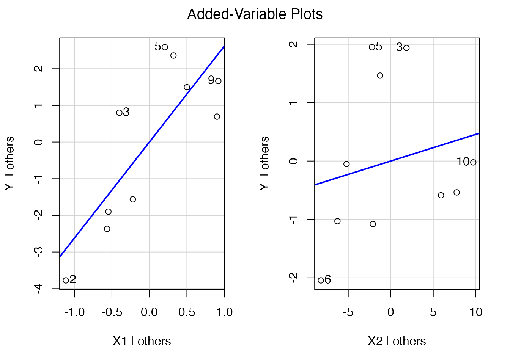
위의 value added 그래프의 좌측은 X1-Y의 관계, 우측은 X2-Y의 관계를 의미한다. 좌측을 중심으로 설명하면 Y축은 ‘Y <- X2’ 회귀식의 잔차를 나타내고 있다. X축은 ’X1 <- X2’회귀식의 잔차를 나타낸다. 종속변수와 독립변수 모두 X2가 미치는 영향을 partial out 한 것이다.
8.3 회귀분석과 2차함수
8.3.1 비선형 회귀분석
지금까지 우리가 다른 회귀분석은 선형적(linear)이었다. 이때 선형이라는 뜻은 X값에 관계없이 X-Y의 관계가 일정하다, 다시 말해 기울기값이 동일하다는 뜻이다. \(Y=a+bx\)의 간단한 1차함수를 떠올려보면, X와 Y의 관계는 언제나 일정하다.
비선형관계의 회귀분석은 보통 2차 함수부터 시작한다. 중학교때 배웠던 2차 함수의 포물선을 생각해보자. 가장 기본적인 형태의 2차함수는 다음과 같이 표현한다. \(Y=aX^2+bX+c\).
아래 그래프는 \(Y=X^2+2X-24\)를 그래프로 표현한 것이다. 그래프를 그리기 위해 중요한 값 3개가 있다.
- ‘X 절편’ = \(Y\)=0의 값을 갖는 \(X\)값 예: \(0=X^2+2X-24=(X+4)(X-6)\)이므로 ’-4’와 ’6’이다.
- ‘Y 절편’ = \(X\)=0의 값을 갖는 \(Y\)값 \(y= a*0^2+b*0+c\) 이므로 ’c=-24’이다.
- 꼭지점 :Y가 최대(a<0) 또는 최소(a>0)의 값을 갖는 지점 \(X=-\frac{b}{2a}\),\(Y=f(-\frac{b}{2a})\) 따라서 (-1, -25)이다.
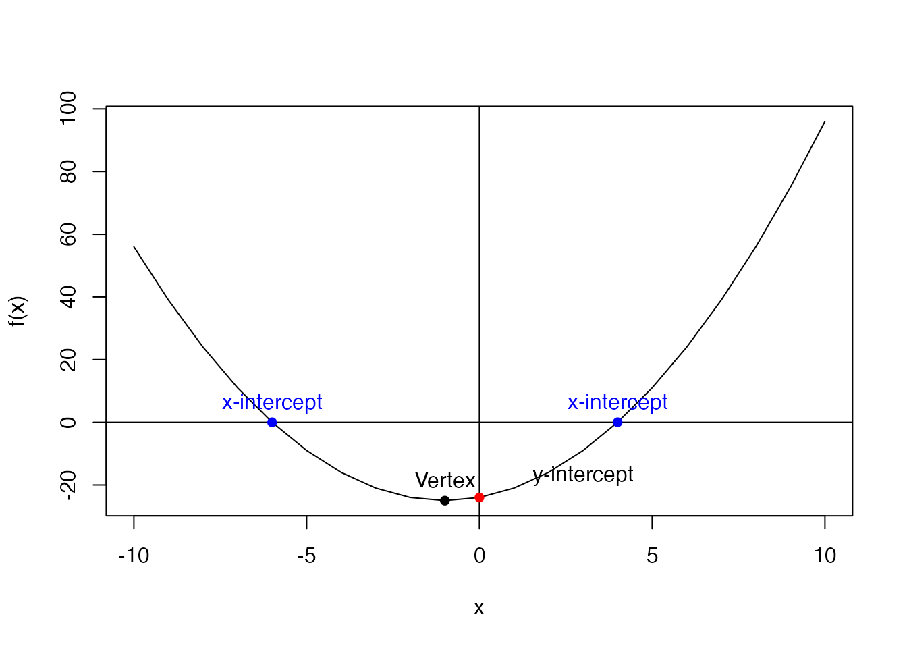
2차함수의 모양은 a, b, c의 값에 따라 달라진다. 아래 그래프를 보면 각 계수의 부호에 따라 그래프의 모양과 위치가 달라지는 것을 알 수 있다. 중학교 시절 수학을 떠올려보면 다음과 같이 정리가 가능하다.
2차항의 계수 ’a’의 부호 : 그래프의 오목함과 볼록함을 결정
- a>0 : 볼록한 비선형
- a<0 : 오목한 비선형
1차항의 계수 ’b’의 부호 : y축을 지날때 상승/하강
- b>0 : 좌에서 우로 y축을 지날때 상승
- b<0 : 좌에서 우로 y축을 지날때 하강
상수항의 계수 ’c’의 부호 : 그래프의 \(Y\)절편을 결정함
- c>0 : y 절편이 양의 값
- c<0 : y 절편이 음의 값
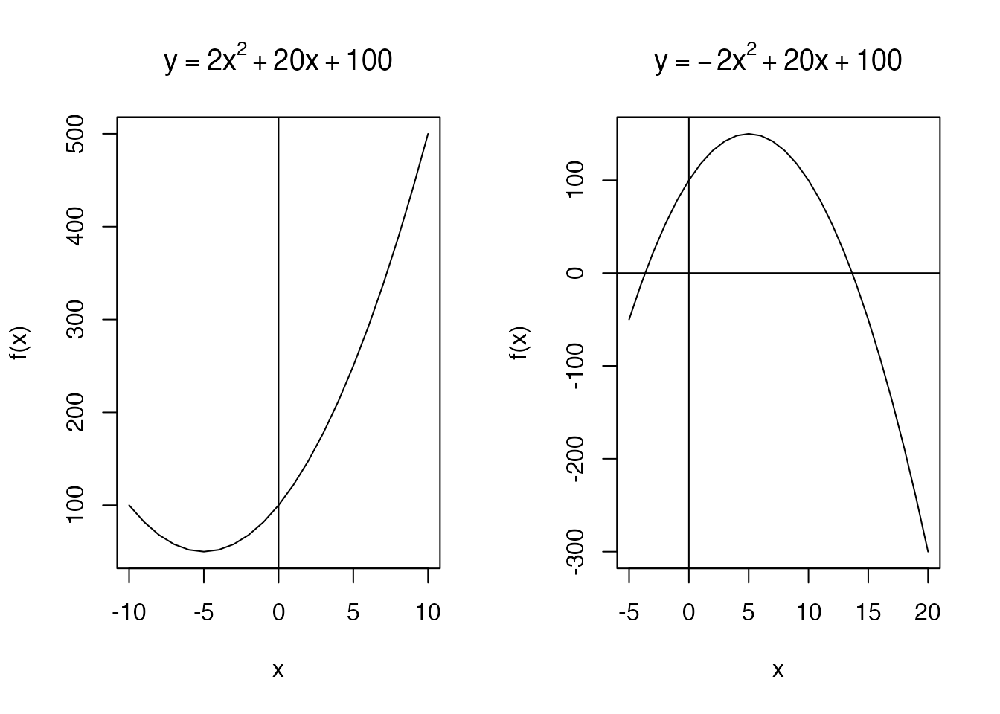
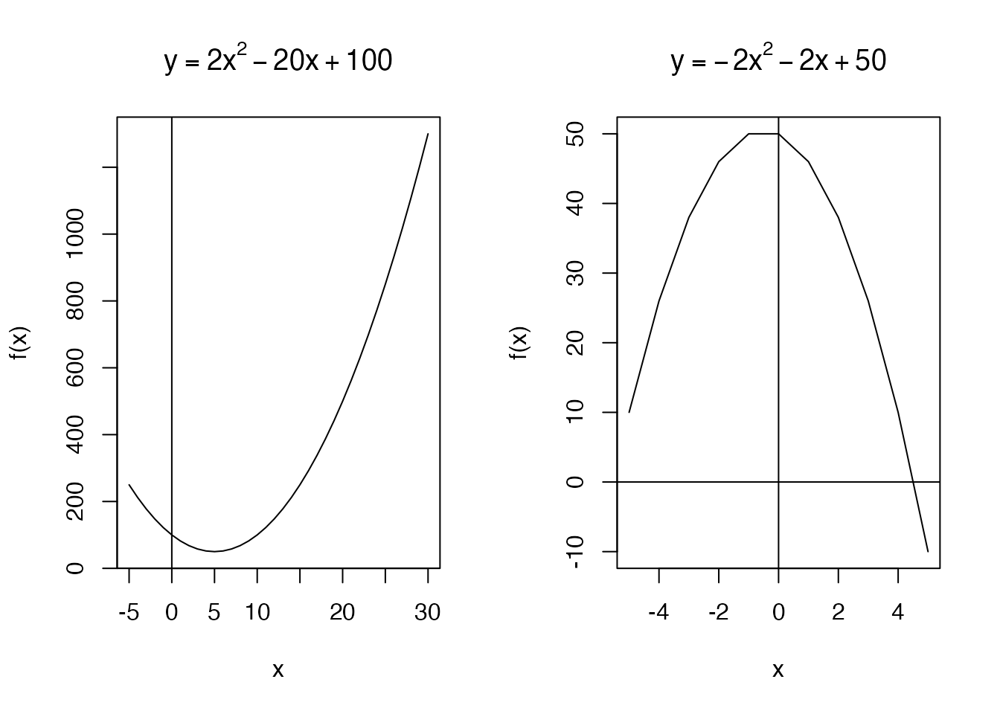
예를 들어 개인의 시험점수(Y)와 학습시간(X)의 관계를 2차 함수로 설명해보자. 첫번째 그래프의 함수인 \(Y=2X+20X+100\)를 회귀식으로 쓰면(8.5)와 같다.
\[\begin{equation} \hat{Y} = 100+(20*X)+2X^2 \tag{8.5} \end{equation}\]
8.3.2 절편의 의미
여기서 Y 절편은 100으로, ’X가 0일때 Y의 값’이다. 그래프에서 포물선이 Y축을 지날때 Y값이 100인것을 확인하자. 이 연구문제에서는 학습시간이 0인 사람의 예측된 시험점수(predicted Y, \(\hat{y}\))가 100점이라는 뜻이다.
8.3.3 1차항및 2차항의 기울기의 의미
선형 회귀분석(1차함수)와 달리 비선형 회귀분석에서는 기울기를 나타내는 항이 2개 이상으로 늘어난다. 2차함수를 기준으로 살펴보면, 기울기를 나타내는 항은 \(20X\)와 \(2X^2\)의 두개의 계수 값을 모두 해석해야 한다.
가장 간단하게 기울기를 확인할 수 있는 방법은 미분(differentiation)을 하는 것이다. 미분이란 어떤 면을 미세하게 층층히 쪼개었을때, 각각의 층을 ’미세한 부분’이라고 하여 미분이라고 부르는 것이 어원이다. 좀더 간단히 설명하면 ’한 점에서의 기울기’라고 할 수 있다. \(Y=F(x)\)라는 함수 위의 (a, f(a))라는 특정한 점에서의 기울기이고 \({f}'(a)\)로 표시한다. 이때 \({f}'(a)\) 는 다음과 같은 뜻이다.
- X=a 인 점에서의 기울기
- X=a 인 점에서의 접선의 기울기
- X=a 인 점에서의 미분값
- X=a 인 점에서의 미분계수
다시 원래의 회귀식(8.5)로 돌아와 생각해보자. 이 함수의 기울기(\(X\)한단위 변화시 \(Y\)의 변화량)을 구하기 위해서는 \(X\)로 미분한다. 고등학교때 배웠던 간단한 미분공식을 활용해보면 아래와 같다. 5.
\(\frac{d}{dx}f(x)={f}'(x) = 2*2*X +20 = 4X+20\)
따라서 이 2차함수의 기울기는 4X+20이다. 2차항이 존재하기 때문에 \(X\)로 한번 미분했을 때 상수가 아닌 X가 포함된 값이 나온다. 이것은 무엇을 의미할까? 이는 \(X\)의 값에 따라 기울기의 값이 변화한다는 비선형함수의 특징을 나타낸다. 잘 이해가 안될때는 X에 특정 값을 반복해서 넣고, 이를 그래프로 이해해보자.
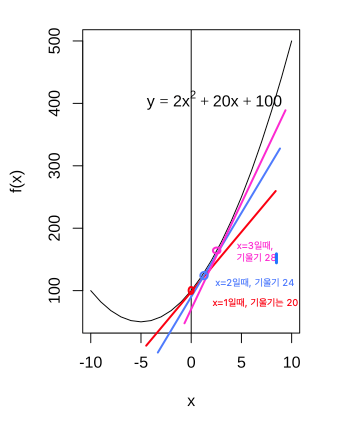
X=0일때, 기울기= \(4*0+20 = 20\)
X=1일때, 기울기= \(4*1+20 = 24\)
X=2일때, 기울기= \(4*2+20 = 26\)
X=3일때, 기울기= \(4*3+20 = 28\)
그림과 대입값에서 볼수 있듯이 기울기는 고정(constant)되지 않고, 계속 변화한다. 구체적으로는 \(X\)가 증가할 수록 기울기는 점차 증가한다.
여기서 ‘기울기는 변화한다’는 뜻은 기울기의 ’변화량’이 존재한다는 뜻이다. 이때 기울기의 변화량은’ \(X\)가 한단위 증가할때, \(Y\)의 변화량의 변화량’이다. 이는 \(f(x)\)를 \(X\)로 두 번 미분한 값, 다시 말해 \({f}''(x)\)이다. 종합해보면 다음과 같다.
\(\frac{d}{dx}{f}'(x)\)=\({f}''(x)\) = \(4\)
이 2차 함수를 두번 미분한 값, 다시 말해 기울기의 변화량은 ’4’이다. 위의 그림에서 X가 0일때 기울기가 20, X가 1일때 기울기가 24, X가 2일때 기울기가 28로, x가 한단위 변화할때 기울기는 ’4’씩 변화하는 것을 볼 수 있다.
8.3.4 임금방정식으로 이해하는 비선형 회귀분석
비선형 회귀분석은 사회과학에서 빈번하게 활용된다. 가장 대표적인 사례는 Mincer (19##)의 임금 방정식일 것이다. 개인의 임금은 보통 연령에 따라 증가하지만 선형적인 관계는 아니다. 다시 말해 나이가들수록 임금이 상승하지만 기울기는 변화하다가, 특정한 나이에 정점을 찍고 살짝 감소하는 비선형 관계를 갖고 있다. Mincer의 임금방정식은 연령-임금의 관계를 기초로 교육연한, 경력연한 등의 관계를 구명하는 목적을 갖고 있지만, 우리는 단순화하여 연령-임금의 관계만 국한해서 설명해보자.
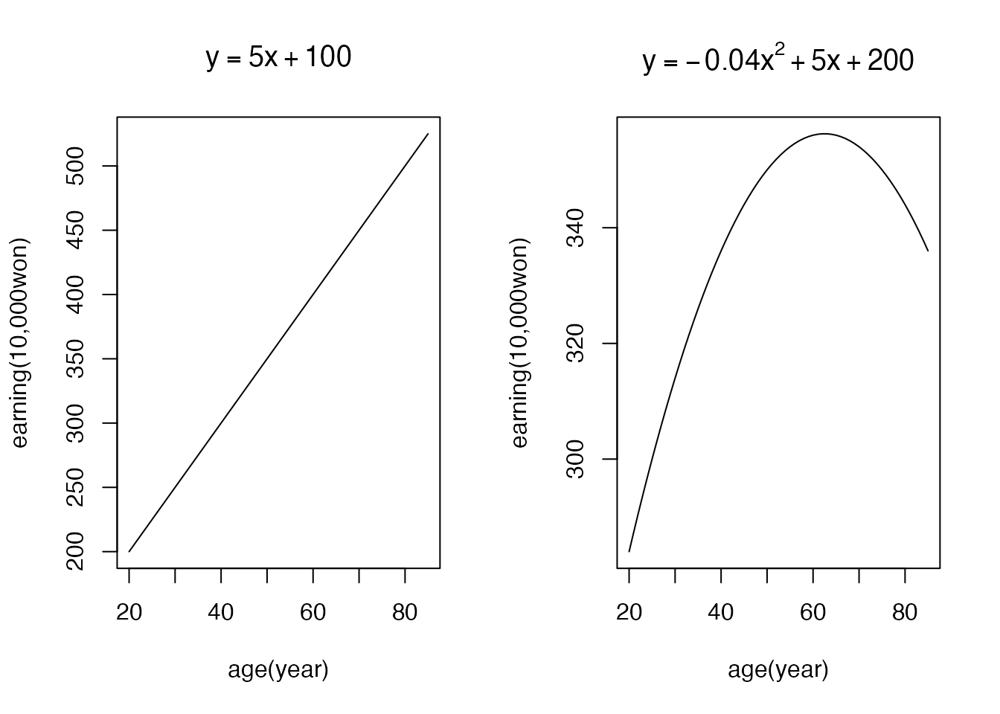
좌측의 그림은 1차함수(\(\small Y(임금)=5*X+100\)), 우측의 그림은 2차함수 (\(\small Y(임금)=-0.04*X^2+5*X+200\))을 나타낸다. 선형관계인 1차함수는 나이가 증가할 수록 일정한 비율로 임금이 증가한다. 결국 20세에 200만원이었던 임금은 30세에 250만원, 40세에 300만원씩 올라가서 80세에는 500만원까지 끊임없이 증가하는 비현실적인 모습을 보인다. 실제 노동시장에서의 개인의 임금은 우측의 그림과 가깝다. 연령이 증가할수록 임금은 증가하긴 하지만 증가율은 점차 감소하는 것이다.
8.3.4.1 선형 관계인 1차함수의 계수 해석
- 회귀식 : \[\small Y(임금)=5*X(연령)+100\]
- X 절편 : 100
- 연령(X)가 0일때, Y(임금)의 값은 100만원이다.
- 기울기 : \[\small \frac{d}{dx}{f}(x)=5\]
- 애매한 해석:
- 임금과 연령은 정적인 관계가 있다.
- 연령이 증가할 수록 임금이 상승한다.
- 선명한 해석:
- 연령(X)이 1살 증가하면, Y(임금)은 5만원씩 증가한다.
- 이밖에도 특정 연령의 예측 임금도 해석할 수 있다. 예) 40세일때 임금은 \(\small 5*40 +100=300\)만원이다.
8.3.4.2 비선형 관계인 2차 함수의 계수 해석
회귀식: \[\small Y(임금)=-0.04*X^2+5*X+200\]
X 절편 : 100
- 연령(X)가 0일때, Y(임금)의 값은 200만원이다.
기울기 : \[\small \frac{d}{dx}{f}(x)=-0.04*2*X+5= -0.08X+5\]
기울기의 변화량 : \[\small \frac{d}{dx}{f}'(x)= {f}''(x) =-0.08\]
애매한 해석:
- 연령과 임금의 관계는 정적이다(x의 계수가 양의 값이므로), 그러나 이 기울기는 점점 감소한다 (\(X^2\)의 계수가 음의 값이므로)
선명한 해석 :
- 연령이 0세일때, 연령과 임금의 기울기는 5이다.
- 이 기울기는 10세에 \(\small 4.2=-0.08*10+5\), 20세에 \(\small 3.4=-0.08*20+5\)로 양의 값을 갖지만, 그 크기가 점차 줄어든다.
- 연령과 임금의 기울기는 62.5세(-0.08*62.5+5=0)에 0의 값을 갖는다. 다시 말해 62.5세에 임금은 최고값을 갖는다.
- 기울기는 62.5세 이후에 0.08씩 하락해서 음의 값을 갖는다. 예를 들어 70세에는 -0.6(-0.08*70+5)의 값을 갖는다.
8.4 회귀분석에서 더미변수 활용
8.4.1 회귀분석에 적합한 변수의 척도
초보연구자들이 자주 하는 실수 중에 하나는 회귀분석에 적합하지 않은 변수를 연구에 사용하는 것이다. 1장에서 다뤘던 것처럼 우리가 통상 사용하는 변수의 척도(scale)는 크게 네가지 이다.
명목척도(categorical scale) : 숫자로 표현할 수 없다. 예) 색깔 (빨간색, 파란색, 노란색 등), 성별(남자, 여자), 통학방식(도보, 자가용, 대중교통 등)서열척도(ordinal scale) : 숫자로 표현할 수 있고, 방향이 있다 (크고, 작고). 그러나 숫자간의 간격이 동간이 아니기때문에 덧셈, 뺄셈을 할 수 없다. 예) 올림픽성적(1등, 2등, 3등), 총선투표결과 (1등, 2등, 3등)등간 척도(interval scale): 숫자로 표현할 수 있고, 방향이 있으며, 숫자간의 간격이 동간이다. 따라서 덧셈, 뺄셈을 할 수 있다. 예) 리커트 척도로 측정된 자기보고점수, 시험성적 등비율척도(ratio scale): 숫자로 표현할 수 있고, 방향이 있으며, 숫자간의 간격도 동간이다. 또한 절대 0점을 포함한다. 예) 몸무게, 키 등
변수의 척도가 서열척도라면 회귀분석에 포함될 수 없다. 앞서 살펴본 1차 함수가 회귀식의 원형이라는 점을 기억해보면 너무나 당연할 것이다. 독립변수(X)가 명목척도인 다음의 예를 생각해보자. 혈액형은 A형=1, B형=2, O형=3으로 코딩하였다.
| ID | X(혈액형) | Y(직무성과) |
|---|---|---|
| 1 | 1 | 12 |
| 2 | 1 | 11 |
| 3 | 1 | 18 |
| 4 | 1 | 19 |
| 5 | 2 | 21 |
| 6 | 2 | 18.5 |
| 7 | 2 | 21.5 |
| 8 | 2 | 23.5 |
| 9 | 3 | 22.5 |
| 10 | 3 | 25 |
##
## Call:
## lm(formula = Y ~ X, data = bloodLearning)
##
## Residuals:
## Min 1Q Median 3Q Max
## -4.5000 -2.0938 0.5625 2.2188 3.5000
##
## Coefficients:
## Estimate Std. Error t value Pr(>|t|)
## (Intercept) 10.875 2.485 4.376 0.00236 **
## X 4.625 1.275 3.628 0.00671 **
## ---
## Signif. codes: 0 '***' 0.001 '**' 0.01 '*' 0.05 '.' 0.1 ' ' 1
##
## Residual standard error: 3.017 on 8 degrees of freedom
## Multiple R-squared: 0.6219, Adjusted R-squared: 0.5747
## F-statistic: 13.16 on 1 and 8 DF, p-value: 0.006706
## 1 2 3 4 5 6 7 8 9 10
## -3.500 -4.500 2.500 3.500 0.875 -1.625 1.375 3.375 -2.250 0.250위의 분석결과처럼 혈액형과 같은 명목척도를 투입하더라도, 1, 2, 3과 같이 숫자로 코딩되어 있기 때문에 결과는 도출된다. 통계패키지는 이 변수가 명목척도라는 것을 알수 없다. 따라서 그럴듯해보이지만 엉터리 분석결과가 산출되었다. 위의 결과표를 이용해 회귀식을 만들어보자.
- \(Y=10.875+4.625*X(혈액형)+e\)
회귀식을 만들지 않는다면, 결과표를 보고 “혈액형이 직무성과에 정적인 영향을 미친다” 같은 엉뚱한 분석을 할 수도 있다. 하지만 이제 우리는 4.625가 기울기라는 것을 안다. 다시 말해 \(X\)가 한 단위 변화할때 \(Y\)가 4.625만큼 증가한다는 것이다. 하지만 명목척도인 \(X\)의 한 단위 변화량은 어떠한 의미도 없다. 먼저 \(X\)의 절대값이 커지는 것에 의미가 있는가? A형에서 B형, O형으로의 변화가 의미가 있는가? 또한 한 단위의 변화, 다시 말해 A형->B형, 또는 B형 ->O형으로의 변화가 의미가 있는가?
따라서 회귀분석에는 반드시 등간척도 이상의 변수만이 투입이 가능하다. 서열척도의 경우 방향이 있기 때문에 투입가능하다고 생각하지만, 1등과 2등, 2등과 3등의 차이가 일정하지 않기 때문에 \(X\) 한단위 변화량의 의미가 없다.
[그림삽입]- 엑스축은 혈액형, 와이축은 성과 옉스축은 등수(등간X) 와이축은 성과 점수
8.4.2 범주형 변수가 독립변수로 투입될 때
그렇다면 회귀분석에는 범주형 변수 투입이 불가능한가? 불가능하다기 보다는 우회하는 경로가 있다. ’종속변수(dependent variable, Y)’가 범주형 변수일 때는 ’로지스틱 회귀분석’을 실시해야하기 때문에 이 장에서는 다루지 않는다. ’독립변수(independent variables, Xs)’가 범주형 변수일때는 반드시 더미화해야 하며, 해석 또한 달라진다.
8.4.2.1 이분형(dichotomous) 척도가 독립변수일 때
이분형 척도는 범주가 두 개인 척도를 의미한다. 대표적으로 성별(남/여), 취업/진학, 합격/불합격 등과 같은 변수가 이에 해당된다. 이분형 척도는 범주가 세 개 이상인 척도에 비해 다루기 쉬운 편이다.
이분형 척도는 범주가 두개 이므로 기준 범주는 ‘0’, 그리고 반대의 범주는 ’1로 코딩하는 것이 원칙이다. 아래 표와 같이 성별(남/여)이 직무성과에 미치는 영향을 확인하고 싶은 데이터가 있다고 가정해보자. 여성을 기준집단(0으로 코딩)으로 두고, 남성은 비교집단(1로 코딩)하였다.
| ID | X(성별) | Y(직무성과) |
|---|---|---|
| 1 | 1 | 12 |
| 2 | 1 | 11 |
| 3 | 1 | 18 |
| 4 | 1 | 19 |
| 5 | 1 | 21 |
| 6 | 0 | 18.5 |
| 7 | 0 | 21.5 |
| 8 | 0 | 23.5 |
| 9 | 0 | 22.5 |
| 10 | 0 | 25 |
##
## Call:
## lm(formula = Y ~ X, data = genderLearning)
##
## Residuals:
## Min 1Q Median 3Q Max
## -5.20 -2.95 0.80 2.55 4.80
##
## Coefficients:
## Estimate Std. Error t value Pr(>|t|)
## (Intercept) 22.200 1.602 13.861 7.09e-07 ***
## X -6.000 2.265 -2.649 0.0293 *
## ---
## Signif. codes: 0 '***' 0.001 '**' 0.01 '*' 0.05 '.' 0.1 ' ' 1
##
## Residual standard error: 3.581 on 8 degrees of freedom
## Multiple R-squared: 0.4673, Adjusted R-squared: 0.4007
## F-statistic: 7.018 on 1 and 8 DF, p-value: 0.0293
##
## Welch Two Sample t-test
##
## data: Y by X
## t = 2.6491, df = 6.2143, p-value = 0.03683
## alternative hypothesis: true difference in means between group 0 and group 1 is not equal to 0
## 95 percent confidence interval:
## 0.5038568 11.4961432
## sample estimates:
## mean in group 0 mean in group 1
## 22.2 16.2회귀분석결과를 바탕으로 회귀식을 써보면 다음과 같다. \[\hat{Y}(직무수행) = 22.200-6.000 \ast X(성별) \]
독립변수인 성별의 회귀계수는 ’-6.000’으로 부적인 영향관계를 갖고 있다. 1=남성, 0=여성으로 코딩했으므로 남성일수록 여성에 비해 직무수행 점수가 낮다고 해석할 수 있다. 좀더 선명한 해석을 하기 위해서는 독립변수 X에 집단을 직접 집어 넣어 \(\hat{Y}\)을 산출하면 된다.
남성집단은 X=1 이므로, 예측되는 직무수행 점수는 16.200이다.
\[\hat{Y}(직무수행) = 22.200-6.000 \ast 1 = 16.200 \]
여성집단은 X=0 이므로, 예측되는 직무수행 점수는 22.2000이다.
\[\hat{Y}(직무수행) = 22.200-6.000 \ast 0 = 22.200 \]
다시 회귀식을 살펴보면, 기준집단(x=0 )의 \(\hat{Y}\)은 회귀식의 절편과 같고, 비교집단(x=1)의 \(\hat{Y}\)은 기준집단과 회귀계수 만큼의 격차(differences)와 같다.
8.4.2.2 3집단 이상의 범주형 척도가 독립변수일 때
이분변수인 경우 한 집단은 0, 다른 집단은 1로 코딩을 할 수 있기 때문에 두 집단의 격차(difference)로 회귀분석을 실시할 수 있지만, 3개 집단부터는 불가능하다. 따라서 3개의 집단을 쌍별 비교하는 ’더미코딩’을 실시해야 한다.
앞서 살펴봤던 혈액형과 직무수행과의 관계를 살펴보자. A형은 1, B형은 2, O형은 3으로 코딩되어 있다.더미코딩의 핵심은 n개의 집단을 ’n-1’개의 변수로 재코딩하는 것이다. 더미코딩을 하기 위해서는 기준집단(reference group)을 먼저 설정해야한다. 임의로 기준집단을 O형으로 두자. 3개의 범주는 n-1, 즉 2개의 더미변수를 추가로 생성해야 한다. 변수의 코딩은 아래의 표와 같다. 기준집단을 O형으로 두면, 추가되는 더미변수들은 각각 A형과 B형을 의미하게 된다.
| X(혈액혈) | D1(A형) | D2(B형) |
|---|---|---|
| A | 1 | 0 |
| B | 0 | 1 |
| O | 0 | 0 |
좀더 쉬운 이해를 위해 아래에 더미코딩이 추가된 데이터 셋을 살펴보자. 변수를 추가 한다는 말은 열(column)이 추가된다는 뜻이다. 기존에 X(혈액형) 변수는 하나의 열(column)이다. 더미변수를 두개 추가하였으므로, 2개의 column이 추가로 생성되었다. 데이터를 하나 하나 살펴보자. 각 행(row)은 사람, 열(column)은 변수를 의미함을 상기하자.
- A형인 사람은 D1변수에는 1, D2변수는 0의 값을 갖는다.
- B형인 사람은 D1변수에는 0, D2변수는 1의 값을 갖는다.
- O형인 사람은 D1변수에는 0, D2변수는 0의 값을 갖는다.
이와 같이 n-1 개의 더미변수를 통해 3집단을 1 또는 0의 값을 갖도록 코딩할 수 있다.
ID<-c(1,2,3,4,5,6,7,8,9,10)
X<-c(1, 1, 1, 1, 2, 2, 2, 2, 3, 3)
D1 <- c(1, 1, 1, 1, 0, 0, 0, 0, 0, 0)
D2 <- c(0, 0, 0, 0, 1, 1, 1, 1, 0, 0)
Y<-c(12, 11, 14, 15, 19, 20.5, 18.5, 18.5, 27, 25)
bloodLearning2 <-data.frame(ID, X, D1, D2, Y)
bloodReg2 <-lm(Y ~ D1 + D2, data=bloodLearning2)
bloodLearning2
## ID X D1 D2 Y
## 1 1 1 1 0 12.0
## 2 2 1 1 0 11.0
## 3 3 1 1 0 14.0
## 4 4 1 1 0 15.0
## 5 5 2 0 1 19.0
## 6 6 2 0 1 20.5
## 7 7 2 0 1 18.5
## 8 8 2 0 1 18.5
## 9 9 3 0 0 27.0
## 10 10 3 0 0 25.0
summary(bloodReg2)
##
## Call:
## lm(formula = Y ~ D1 + D2, data = bloodLearning2)
##
## Residuals:
## Min 1Q Median 3Q Max
## -2.0000 -0.9062 -0.3750 1.0000 2.0000
##
## Coefficients:
## Estimate Std. Error t value Pr(>|t|)
## (Intercept) 26.000 1.024 25.38 3.76e-08 ***
## D1 -13.000 1.254 -10.36 1.69e-05 ***
## D2 -6.875 1.254 -5.48 0.000926 ***
## ---
## Signif. codes: 0 '***' 0.001 '**' 0.01 '*' 0.05 '.' 0.1 ' ' 1
##
## Residual standard error: 1.449 on 7 degrees of freedom
## Multiple R-squared: 0.9407, Adjusted R-squared: 0.9238
## F-statistic: 55.53 on 2 and 7 DF, p-value: 5.075e-05더미코딩이 완료되면, 더미변수만을 회귀식에 투입하면 된다. 이때 회귀식은 \(Y=B0+B1*D1+B2+D2+e\)이다. 회귀분석결과 3개의 계수가 산출되었다.
- Y절편 : 26.000
- D1의 회귀계수 : -13.000
- D2의 회귀계수 : -6.875
이 계수들을 활용하여 회귀식을 다시 써보자.
\[ \hat{Y}= 26.000-13.000\ast D1 -6.875\ast D2 \] Y절편은 D1과 D2가 모두 0일때 Y값이므로, O형의 직무수행점수이다. (O형은 D1과 D2에 모두 0으로 코딩한 집단이라는 것을 기억하자). 따라서 O형의 직무수행점수는 26점이다. D1의 회귀 계수는 D1이 1일때와 0일때의 격차이다.
- D1이 1일때 (동시에 D2은 0) : 26.000-13.0001-6.8750 = 13.000 -> A형의 직무수행점수
- D1이 0일때 (동시에 D2은 0) : 26.000-13.0000-6.8750 = 26.000 ->O형의 직무수행점수
따라서 D1의 회귀계수(-13.000)를 통해, A형과 O형의 직무수행점수의 차이가 -13.000임을 알 수 있다.
마찬가지로 D2의 회귀 계수는 D2가 1일때 (B형)와 D2가 0일때 (O형)의 직무수행점수의 차이를 의미한다. 헷갈릴때는 각각의 변수에 값을 투입해보면 정확히 이해할 수 있다.
- D2이 1일때 (동시에 D1은 0) : 26.000-13.0000-6.8751 = 19.125 -> B형의 직무수행점수
- D2이 0일때 (동시에 D1은 0) : 26.000-13.0000-6.8750 = 26.000 -> O형의 직무수행점수
이처럼 더미변수를 투입한 회귀식에서의 회귀계수는 준거집단-비교집단의 차이(difference)를 의미한다. 또한
barplot(height=data\(value, names=data\)name)
[그래프 추가]
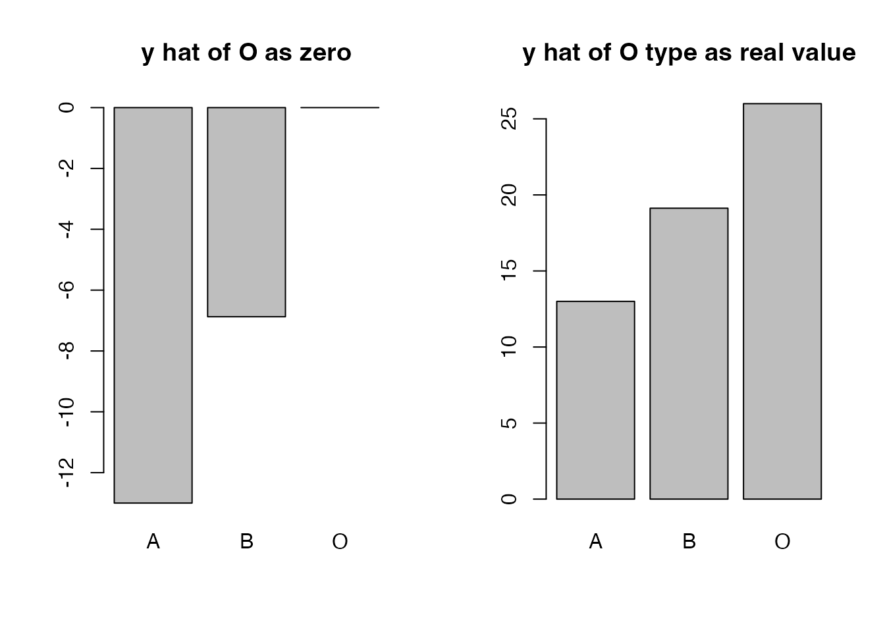
8.5 회귀식으로 이해하는 조절효과
8.5.1 조절효과의 개념
조절효과는 ’moderation effect’라고 불리우며, Y 와 X의 관계를 조절변수(M)이 변화 시키는 것을 의미한다. 조절효과는 앞서 살펴본 2차 회귀식을 제대로 이해했다면 아주 손쉽게 이해할 수 있다. 2차 회귀식의 핵심은 Y와 X의 관계, 즉 기울기가 일정하지 않고 ’변화’한다는 것이었다. 마찬가지로 조절효과는 어떠한 조절 변수에 의해 Y와 X의 관계, 즉 기울기(회귀계수)가 변화한다는 것을 의미한다.
산업인력개발 장면에서 조절효과분석이 필요한 사례는 쉽게 샆려볼 수 있다. 앞서 살펴본 학습시간(X)과 직무수행점수(Y)의 관계를 떠올려보자. 가장 기본적인 회귀식은 학습시간이 한 단위 증가할때, 직무수행 점수가 일정하게 증가한다는 것이다. 그러나 모든 사람이 학습시간을 늘릴수록 똑같은 속도로 직무수행시간이 늘어나지는 않는다. 예를 들어 ’일 열의’라는 구인을 생각해보자. 많은 동기이론들을 통해 자신의 직무 및 일에 동기를 갖고 열의를 갖는 사람들일 수록 학습효과가 높다고 밝혀져있다. 따라서 우리는 다음과 같은 가설을 생각해볼 수 있다.
- 가설 1: 학습시간(X)이 늘어날 수록 직무수행점수(Y)는 늘어날 것이다.
- 가설 2: 일 열의(M)가 높은 사람일 수록 학습시간(X)이 직무수행점수(Y)에 미치는 정적인 영향은 증가(강화)할 것이다.
직관적으로 생각해보면, 일 열의가 높은 집단과 낮은 집단을 구분하여 회귀선을 그려보면
- 일 열의가 높은 집단은 X와 Y의 그래프가 좀더 가파를 것이다(기울기의 절대값이 크다)
- 일 열의가 낮은 집단은 X와 Y의 그래프가 좀더 완만할 것이다(기울기의 절대값이 작다)
따라서 조절효과의 핵심은 X가 Y에 미치는 영향이 M의 크기에 따라 변화한다는 점이다.
8.5.2 회귀식 만들기와 해석하기
조절효과를 분석하기 위한 기본적인 회귀식은 다음과 같다.
\[\begin{equation} Y= B_{0}+B_{1} \ast X+ B_{2} \ast M + B_{3} \ast X_{1} \ast M + e \tag{8.6} \end{equation}\]
회귀식은 크게 네개의 파트로 구성되어 있다: (1) Y절편, (2) 독립변수\(X\)의 회귀계수, (3) 조절변수 \(M\)의 회귀계수, (4) 독립변수 \(X\)와 조절변수\(Y\)의 곱(interaction term) 의 회귀계수. 이러한 기본 형태에서는 왜 \(B_{3}\)가 조절효과를 나타내는지 이해하기가 어렵다. 따라서 이 회귀식을 (8.7)과 같이 변형해보자.
\[\begin{equation} \begin{split} Y & = B_{0}+B_{1} \ast X+ B_{2} \ast M + B_{3} \ast X \ast M + e\\ & = B_{0} +(B_{1}+B_{3}\ast M) \ast X + B_2 \ast M\\ \end{split} \tag{8.7} \end{equation}\]
(8.7)에서 주목해야할 부분은 \(X\)의 회귀계수인 $B_{1}+B_{3} \ast M$이다. \(X\)가 \(Y\)에 미치는 영향력인 회귀계수가 하나의 값으로 추정되는 것이 아니라 조절변수\(M\)이 포함된 회귀식의 형태를 띈다. 따라서 조절효과분석은 regression-in-regression, 다시 말해 회귀분석 안에 또하나의 회귀식이 있는 형태를 띈다.
$B_{1}+B_{3} \ast M$는 X가 Y에 미치는 회귀계수를 종속변수로 하고, M을 독립변수로 하는 또하나의 회귀식인 것이다. 앞서 언급한 가설 2: 일 열의(M)가 높은 사람일 수록 학습시간(X)이 직무수행점수(Y)에 미치는 정적인 영향은 증가(강화)할 것이다가 바로 이 회귀식을 의미한다. 가설을 찬찬히 살펴보면 영향을 받는 쪽(종속변수)는 X와 Y의 기울기이고, 영향을 주는 쪽(독립변수)는 일 열의(M)이다.
8.5.3 분석결과 해석 예제
실제 데이터를 활용하여 조절효과를 분석해보자. 이번에는 20명의 사람의 학습시간(X), 일 열의(M), 직무수행점수(Y)의 데이터를 수집했다. 우리가 수집한 데이터는 행이 20개(사례수), 열이 4개 (ID를 포함하여 변수 4개)의 20 * 4 의 매트릭스 형태이다.
조절효과의 기본 회귀식을 생각해보면 변수 하나가 더 필요하다. X * M , 즉 독립변수와 조절변수의 상호작용항이다. 여러가지 방법이 있지만 통상적으로는 데이터 프레임에 이 상호작용항을 새로운 변수로 추가한다. R에서는 기존 변수(old variable)을 연산하여 새로운 변수(new variable) 로 간단히 추가할 수 있다. 아래 R 코드를 보면 moderLearning\(XM <-moderLearning\)X * moderLearning$M 의 구분이 X과 M을 곱하여 XM을 만들고 있다. 최종적으로 만들어진 데이터프레임은 변수 열이 추가되어 20*5의 행렬이다.
ID<-c(1:20)
X<-c(1, 0.5, 2, 3, 3, 3.5, 4, 4, 4.5, 5, 1.2, 0.7, 2.2, 3.3, 3.1, 3.7, 4.1, 3.9, 4.3, 5)
M<-c(2, 1, 1.2, 1, 1, 1.1, 1, 1.5, 1, 2, 5, 7, 7, 6, 7, 7, 6, 7, 4, 5)
Y<-c(12, 11, 18, 19, 21, 18.5, 21.5, 23.5, 22.5, 25, 12, 11, 18, 19, 28, 29, 26, 27.5, 27.5, 30)
moderLearning <-data.frame(ID, X1, M, Y)
moderLearning$XM <-moderLearning$X * moderLearning$M
moderLearning
## ID X1 M Y XM
## 1 1 1.0 2.0 12.0 2.00
## 2 2 0.5 1.0 11.0 0.50
## 3 3 2.0 1.2 18.0 2.40
## 4 4 3.0 1.0 19.0 3.00
## 5 5 3.0 1.0 21.0 3.00
## 6 6 3.5 1.1 18.5 3.85
## 7 7 4.0 1.0 21.5 4.00
## 8 8 4.0 1.5 23.5 6.00
## 9 9 4.5 1.0 22.5 4.50
## 10 10 5.0 2.0 25.0 10.00
## 11 11 1.0 5.0 12.0 5.00
## 12 12 0.5 7.0 11.0 3.50
## 13 13 2.0 7.0 18.0 14.00
## 14 14 3.0 6.0 19.0 18.00
## 15 15 3.0 7.0 28.0 21.00
## 16 16 3.5 7.0 29.0 24.50
## 17 17 4.0 6.0 26.0 24.00
## 18 18 4.0 7.0 27.5 28.00
## 19 19 4.5 4.0 27.5 18.00
## 20 20 5.0 5.0 30.0 25.00
moderReg <-lm(Y ~ X+M+ XM, data=moderLearning)
summary(moderReg)
##
## Call:
## lm(formula = Y ~ X + M + XM, data = moderLearning)
##
## Residuals:
## Min 1Q Median 3Q Max
## -4.2673 -0.9477 -0.4419 1.0102 4.4372
##
## Coefficients:
## Estimate Std. Error t value Pr(>|t|)
## (Intercept) 10.8869 1.9740 5.515 4.7e-05 ***
## X 2.3572 0.6012 3.921 0.00122 **
## M -0.4978 0.4213 -1.182 0.25457
## XM 0.4216 0.1357 3.106 0.00679 **
## ---
## Signif. codes: 0 '***' 0.001 '**' 0.01 '*' 0.05 '.' 0.1 ' ' 1
##
## Residual standard error: 2.068 on 16 degrees of freedom
## Multiple R-squared: 0.9053, Adjusted R-squared: 0.8876
## F-statistic: 51 on 3 and 16 DF, p-value: 2.062e-08분석결과 X(학습시간)과 XM(학습시간 * 일열의)가 Y(직무수행점수)에 유의미한 영향을 미치는 것으로 나타났다. 구체적으로 해석하기 위해서 추정된 회귀계수를 활용하여 회귀식을 구성해보자.
\[ \hat{Y} = 10.8737 + 2.3928 \ast X -0.5915 \ast M + 0.4309 \ast XM \] \[ \hat{Y} = 10.8737 + (2.3928+0.4309 \ast M) \ast X -0.5915 \ast M \] * Y 절편 : X(학습시간)과 M(일열의)가 0인 경우 Y(직무수행점수)가 10.8737 이다.
M의 회귀계수 : X(학습시간)이 0일때, M(직무 열의)가 한 단위 증가할때 Y(직무수행점수)는 0.5915만큼 감소한다. 다만 통계적으로 유의지하지 않다(이는 M의 회귀계수 H1:\(B_{3}\) is not equal to zero 가 기각되었음을 의미한다)
X의 회귀계수 : 2.3928+0.4309*M
- X의 회귀계수는 M에 따라 변화한다.
- M=0일때 X가 한단위 변화할때 Y는 2.3928만큼 커진다 (2.3928 +0.4309*0)
- M이 한단위 커질 수록 X의 Y에 대한 기울기는 0.4309 만큼 커진다.
- 예를 들어 M=1일때 X의 기울기는 2.3928+0.4309(purple), M=2(blue)일때 X의 기울기는 2.3928+0.4309*2이다.
- 거꾸로 X가 Y에 미치는 영향이 0인 점도 찾을 수 있다. 2.3928+0.4309*M=0을 풀면, M=-5.553 이다. 이는 M이 -5.553인 집단은 X와 Y의 관계가 0이라는 것을 뜻한다.
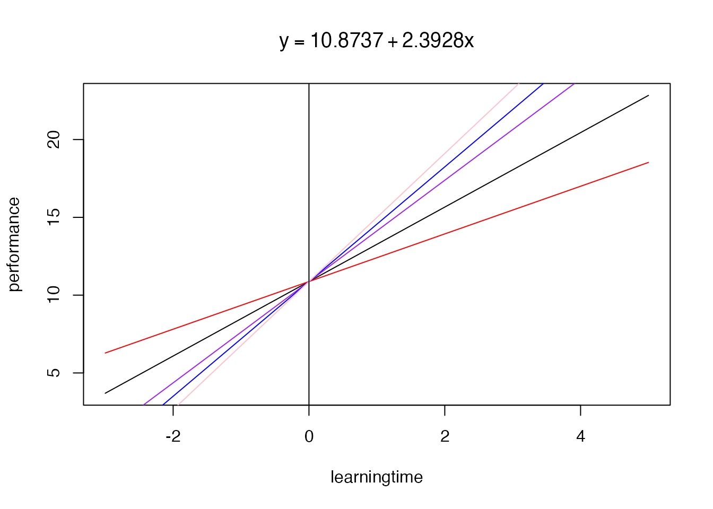
8.6 회귀식으로 이해하는 매개효과
8.6.3 분석결과 해석 예제
’가설 1: 학습시간(X)이 늘어날 수록 직무수행점수(Y)는 늘어날 것이다’을 회귀식으로 써보면 다음 (8.7)과 같다. 이제는 y=a+bx의 회귀식이 눈에 익었을 것이라 생각한다. 이제는 회귀식을 쓸때 하나의 규칙을 더하도록 하겠다. y 절편은 항상 \(B_{0}\)으로 1번째 독립변수(\(X_{1}\))의 회귀계수는 \(B_{1}\), 2번째 독립변수(\(X_{2}\))의 회귀계수는 \(B_{2}\), n번째 독립변수(\(X_{n}\))의 회귀계수는 \(B_{n}\)으로 작성하도록 한다.
1차 함수의 기울기도 미분의 방식으로 생각해보면 이해에 도움이 된다. \(Y=3x+10\)을 미분하면, 기울기는 3인 상수이다. 직선인 1차함수의 그래프를 생각해보면 x의 값에 관계없이 기울기가 일정하다↩︎